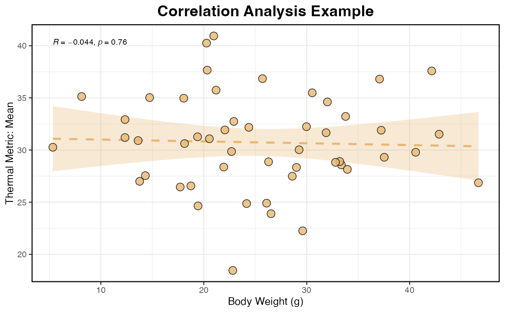

Generates a customizable scatter plot integrated with a fitted linear regression line, confidence intervals, and correlation statistics (such as R and p-value). It supports optional grouping for stratified analysis.
Usage
viz_cor_scatter(
data,
x_col,
y_col,
group_col = NULL,
point_shape = 21,
point_fill = "#E8B671",
point_color = "black",
point_size = 3.5,
point_alpha = 0.8,
smooth_alpha = 0.3,
smooth_linetype = 2,
smooth_size = 1,
cor_method = "spearman",
cor_pos = "top_left",
cor_size = 3,
x_label = NULL,
y_label = NULL,
title = NULL
)Arguments
- data
A data.frame containing the variables to be plotted.
- x_col
A character string specifying the column name for the x-axis.
- y_col
A character string specifying the column name for the y-axis.
- group_col
A character string specifying the grouping variable. Default is NULL.
- point_shape
A numeric value defining the shape of the scatter points. Default is 21.
- point_fill
A character string defining the fill color of the points. Default is "#E8B671".
- point_color
A character string defining the border color of the points. Default is "black".
- point_size
A numeric value defining the size of the points. Default is 3.5.
- point_alpha
A numeric value defining the transparency of the points. Default is 0.8.
- smooth_alpha
A numeric value defining the transparency of the confidence interval band. Default is 0.3.
- smooth_linetype
A numeric value defining the line type of the regression line. Default is 2.
- smooth_size
A numeric value defining the width of the regression line. Default is 1.
- cor_method
A character string specifying the correlation coefficient method ("pearson", "kendall", or "spearman"). Default is "spearman".
- cor_pos
A character string specifying the position of the correlation labels ("top_left", "top_right", "bottom_left", "bottom_right"). Default is "top_left".
- cor_size
A numeric value defining the size of the correlation text. Default is 3.
- x_label
A character string for custom x-axis label. If NULL, x_col is used. Default is NULL.
- y_label
A character string for custom y-axis label. If NULL, y_col is used. Default is NULL.
- title
A character string for the plot title. Default is NULL.
Examples
# Generate a dummy dataset
set.seed(123)
data <- data.frame(
Weight = rnorm(50, mean = 25, sd = 10),
Mean = rnorm(50, mean = 30, sd = 5)
)
# Create the correlation scatter plot
viz_cor_scatter(
data = data,
x_col = "Weight",
y_col = "Mean",
x_label = "Body Weight (g)",
y_label = "Thermal Metric: Mean",
title = "Correlation Analysis Example"
)
#> `geom_smooth()` using formula = 'y ~ x'
